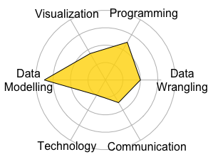

Objective
To further develop my machine learning knowledge, devise new machine learning models and implement them.
Executive Summary
Data Science Skills
Data Modelling
Studied various machine learning and statistical models through Masters in Applied Computing and Bachelor of Math in Statistics.
I also created models for Datalogue such as segmentation of strings (breaking a string into its various components), as well as anomaly detection for text columnar data, working with noisy data, and classifying whole columns of data.
Data Wrangling
Prepared and presented extensive tutorial on using SQL for Statistics Club and two Research Terms using Big Data manipulation tools like Apache Hadoop, and Apache Spark. I also cleaned data related to projects using these tools.
Communication
Created various presentations to convey complex information to others.
Visualization
Taken a statistics course on Data Visualization. Also, created a visualization of neural network layer activations for Datalogue.
Programming
Experience with R, Python, Matlab, and Apache Spark in data ana- lytics. Taken a CS course with C++ (Object-Oriented Software Development).
Technology
Built a small Hadoop cluster using single board computers.
Technical

- R
- Apache Spark
- Matlab
- Python
- C++
- Java
- SQL
- Hadoop
- Scala
Relevant Work Experience
Interdata Laboratories (Datalogue), Montreal, QC — May 2017-Aug 2018
Machine Learning Researcher
- Researched, trained, deployed Machine Learning models to help automatically prepare data
- Designed and Implimented a segmentation machine learning model that breaks a string into it's components
- Created models on anomaly detection for text columnar data, working with noisy data, and classifying whole columns of data
Statistical Consulting Centre, University of Waterloo — 2015
Software Adviser
- Provided software advice on R, SQL, and SPSS for graduate students.
Education
University of Toronto - Toronto, Ontario — 2018
Masters of Science in Applied Computing — 4.0 GPA
Courses: Topics in ML: Interference & Generative Models, Algorithms for Genome Sequence Analysis, Probabilistic Learning and Reasoning, Fundamentals of Statistical Genetics
University of Waterloo - Waterloo, Ontario — 2015
Bachelor of Mathematics with Major in Statistics and Computational Math and CS Minor — 85%
Courses: Inference for Big Data, Classification (Machine Learning), Data Visualisation, Function Estimation, Computational Math, Data Types (Python), Object-Orientated Programming (C++), Databases (SQL)
College of the North Atlantic - St. John’s, NL — 2005
Mechanical Engineering Technology (Manufacturing) Degree — 3.3 GPA
Research Experience
Undergraduate Research Assistant — Summer 2015,14
Shoja’eddin Chenouri: University of Waterloo.
Worked with Apache Spark on various data projects and Investigated and wrote supplementary material on various Big Data Tools
Extracurricular Activities
Statistics Club, University of Waterloo — 2013-2015
President
Math Society, University of Waterloo
Executive Evaluation Committee Member — Fall 2015
Projects
Missing Data Imputation Using Gaussian Mixtures — Fall 2016
CSC 2541: Differentiable Inference and Generative Models Project
Review of Genotype Imputation Algorithms — Fall 2016
CSC 2417H: Algorithms for Genome Sequence Analysis Project
Small Hadoop Cluster — May 2015
Funded by the Math Endowment Fund (MEF).
Determining Influence in Social Media — Fall 2014
Stat 442: Classification Project
Honours and Awards
NSERC Undergraduate Student Research Award — 2015,14
Natural Sciences and Engineering Research Council of Canada.
Cherry Statistics Award — 2013
University of Waterloo
Jason Lang Scholarship — 2012
Student Aid Alberta
Dean's List — 2012
University of Alberta
Honourable Mention — 2012
MCM: The Mathematical Contest in Modelling.
Academic Conferences
SORA/TABA Annual Workshop 2016 and DLSPH Biostatistics Research Day — 2016
University of Toronto
Undergraduate Research Opportunities Conference (UROC 2015)
University of Waterloo
Canadian Undergraduate Mathematics Conference (CUMC 2015)
University of Alberta
Canadian Undergraduate Mathematics Conference (CUMC 2014)
University of Carlton
Presentations
Introduction to Apache Spark — 2016
Statistics Club, University of Waterloo
Introduction to the basics of the big data tool Apache Spark
Introduction to SQL — 2014-15
Statistics Club, University of Waterloo
5 hour presentation on concepts and commands for querying in SQL.
Basics of MapReduce and Big Data — 2015
CUMC 2015
MapReduce and the basics of distributed computing.
Big Data Concepts and Tools— 2015
Statistics Club, University of Waterloo
MapReduce and basic overview of commands for Hadoop.
Introduction to Hadoop — 2015
Statistics Club, University of Waterloo
MapReduce and basic overview of commands for Hadoop.
Darrell Aucoin — darrell.aucoin@edu.uwaterloo.ca — (514) - 802-1234